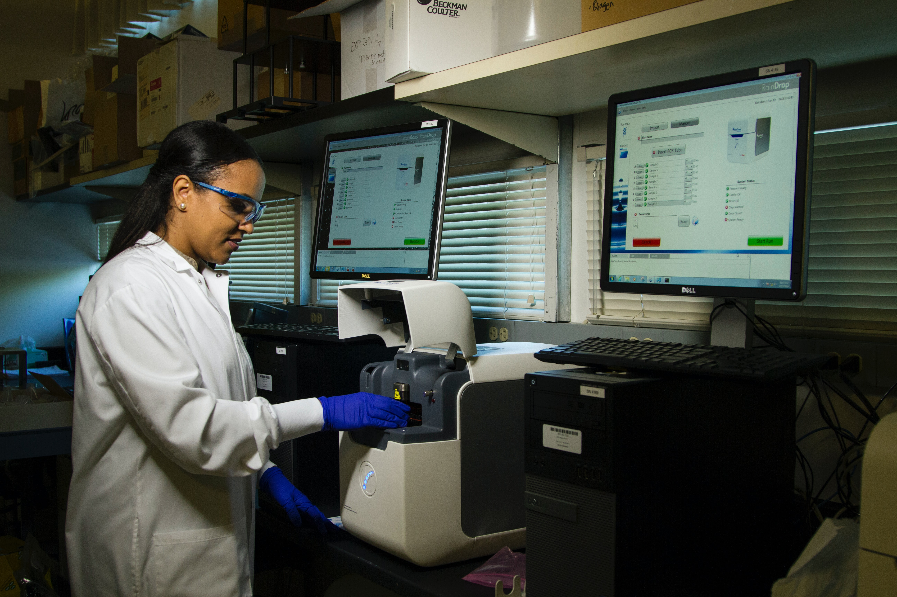

Rapid advances in sequencing and ‘omics technologies as well as increasing data streams from electronic health records (EHRs) and imaging data are opening up new vistas of personal biomedical and health data. In parallel, machine learning and other novel approaches have revolutionized our ability to analyze and find patterns in the multi-dimensional data generated by these modalities. Achieving the promise of precision medicine will require applying state-of-the-art computational tools to integrate and interpret the large volumes of data being generated. We welcome submissions along two tracks: (1) computational tools and methods for analyzing and interpreting genomics and multi-omics data and (2) machine learning tools for understanding disease and clinical outcomes.
 Source: National Cancer Institute
We invite contributions in a broad range of computational topics encompassing two tracks, described below.
Track 1: Computational tools and methods for analyzing and interpreting genomics and multi-omics data for advancing precision medicine.
Track 2: Computational tools and methods utilizing machine learning or deep learning on multi-modal datasets for better understanding of disease or improvement of clinical workflows and outcomes.
The submitted papers are fully reviewed and accepted on a competitive basis.
Please see the PSB paper format template and instructions at http://psb.stanford.edu/psb-online/psb-submit.
PSB traditionally provides fellowships for select trainees. The application process opens upon paper acceptance. Individuals from underrepresented communities are particularly encouraged to participate in the conference and apply for travel support.
Poster presenters will be provided with an easel and a poster board 32"W x 40"H (80 x 100cm). One poster from each paid participant is permitted. See the submission portal web site for the instructions regarding poster submissions.
Last updated: April 3rd, 2020